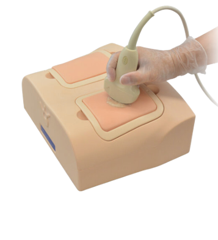

US | RX | CT | MRI
Phantoms especializados para Ultrasonido, RX y Tomografía

EchoLUNG US-19
KYOTO KAGAKU
Debido a la afluencia de pacientes de la pandemia COVID-19, las máquinas de TC y rayos X son cada vez más difíciles de acceder con fines de diagnóstico. Como tal, la ecografía pulmonar es una solución para minimizar la exposición de los profesionales médicos.
Más info...

Echozy SU-1
KYOTO KAGAKU
El ventilador Eagle II adapta el diseño del EMV+ para poder utilizarse en unidades de cuidado intensivos, en departamentos de emergencia y durante el traslado intrahospitalario. Su diseño también permite el montaje en paredes o brazos de extensión específicos, soportes con ruedas y camillas. Compatibles con entornos de IRM.
Más info...

PH76 Dental
KYOTO KAGAKU
Phantom para Radiografia Dental - Sus opciones de boca abierta y cerrada permiten una variedad de aplicaciones para entrenamiento e investigación.
Más info...

PH75-B
KYOTO KAGAKU
Phantom QA para CT Multiple - Fantoma para estudiar protocolos de análisis de imágenes ME-CT.
Reducción de artefactos metálicos.
Reducción de medios de contraste.
Más info...
PH32-B
KYOTO KAGAKU
Phantom QA para Resonancia Magnetica - Este fantoma QA para resonancia magnética permite evaluar el grosor del corte, la resolución espacial, la uniformidad y la distorsión geométrica, así como el contraste.
Más info...
US-9 Biopsia de mama
KYOTO KAGAKU
La biopsia por aspiración con aguja fina (FNAB), la biopsia con aguja central (CNB) y la biopsia Mammotome se pueden realizar bajo guía ecográfica
2. Tejidos mamarios realistas que simulan la suavidad y resistencia de la glándula mamaria.
3. Los objetivos están coloreados para confirmar el muestreo exitoso
Más info...
PBU-60
KYOTO KAGAKU
Phantom de cuerpo entero CT
Absorción radiológica y número de HU aproximados al cuerpo humano
Las articulaciones principales tienen una articulación cercana a la humana, lo que permite varios posicionamientos para el entrenamiento.
el phantom se puede desmontar en 10 partes individuales
Más info...
MW18
KYOTO KAGAKU
Simulador de PICC guiado por Ultrasonido - Material nuevo e innovador similar al humano para una visualización perfecta / Un diseño sencillo con un sitio de punción reemplazable y características anatómicamente precisas
Más info...